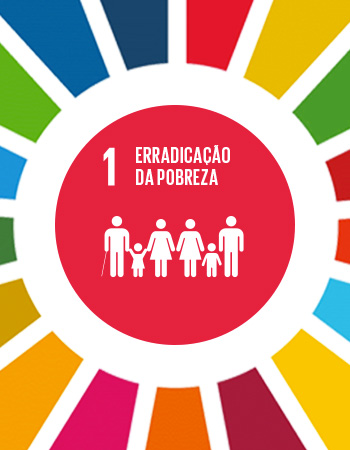
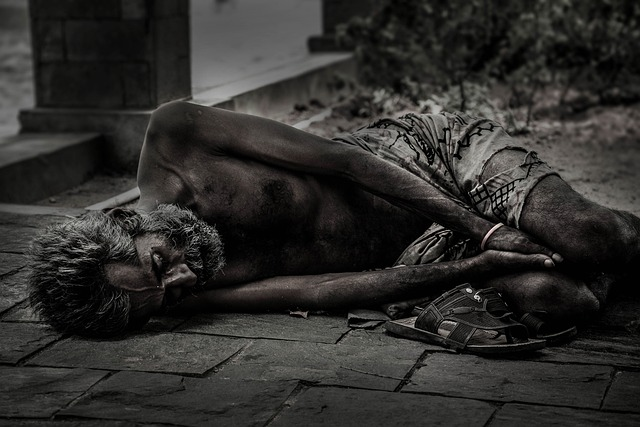
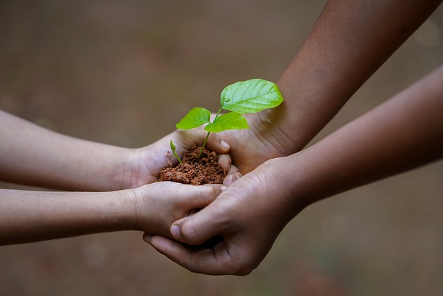

ODS

A Agenda 2030 da ONU é um plano global para atingirmos em 2030 um mundo melhor para todos os povos e nações. A Assembleia Geral das Nações Unidas, realizada em Nova York, em setembro de 2015, com a participação de 193 estados membros, estabeleceu 17 objetivos de desenvolvimento sustentável STF
ODS é a sigla para os Objetivos de Desenvolvimento Sustentável que fazem parte da chamada “Agenda 2030”. Trata-se de um pacto global assinado durante a Cúpula das Nações Unidas em 2015, pelos 193 países membros.
A agenda é composta por 17 objetivos ambiciosos e interconectados, desdobrados em 169 metas, com foco em superar os principais desafios de desenvolvimento enfrentados por pessoas no Brasil e no mundo, promovendo o crescimento sustentável global até 2030.
ODS é a sigla para os Objetivos de Desenvolvimento Sustentável que fazem parte da chamada “Agenda 2030”. Trata-se de um pacto global assinado durante a Cúpula das Nações Unidas em 2015, pelos 193 países membros.
A agenda é composta por 17 objetivos ambiciosos e interconectados, desdobrados em 169 metas, com foco em superar os principais desafios de desenvolvimento enfrentados por pessoas no Brasil e no mundo, promovendo o crescimento sustentável global até 2030.
Conheça um dos projetos da ods

Cerca de
“Um quarto da população brasileira, 52,7 milhões de pessoas, vive em situação de pobreza ou extrema pobreza.”“A extrema pobreza aumentou de 5,8% da população em 2012 para 6,5% em 2018 - um recorde em sete anos”. A pobreza e a extrema pobreza têm efei-tos terríveis para a dignidade das pessoas e, no caso de crianças e adolescentes, trazem consequências irreparáveis. A situação compromete irreversivelmente seu desenvolvimento, condenando-os ao estado perpétuo de vulnerabilidade. Crianças criadas em um ambiente de privação e violência não conseguem crescer, estudar e trabalhar, o que dificulta que se tornem adultos independentes, perpetuando o ciclo de pobreza.

Faça diferença
Você pode nos ajudar através do apadrinhamento financeiro de uma ou mais crianças e proporcionar a ampliação de dezenas de projetos como esse na Ponte Social. .
Fome no Brasil Aumentou
.jpg)
fonte:PENSAN/IBGE, ELABORADO:a Verdade
Insegurança alimentar: ONU afirma que 735 milhões de pessoas passam fome no mundo - Brasil Escola
Número saiu no relatório O Estado da Segurança Alimentar e Nutrição no Mundo (SOFI)
O que é fome? E insegurança alimentar?
O número de pessoas em estado de insegurança alimentar só cresceu ao longo dos últimos anos, conforme apontam novos estudos e relatórios.
Mas, para começo de conversa, você sabe o que é fome? E insegurança alimentar? A ONU traz a definição para ambos os termos.
Fome: privação de comida, tendo em vista “uma sensação desconfortável ou dolorosa causada pela energia insuficiente da dieta”. Também pode ser considerada como uma “má alimentação crônica”;
Insegurança alimentar moderada: falta de acesso “consistente” aos alimentos. As pessoas deste grupo passam por incertezas sobre a possibilidade de acesso a alimentos e, por isso, foram forçadas a reduzir qualidade/quantidade dos produtos;
Insegurança alimentar grave: de acordo com a ONU, o termo diz respeito a pessoas que enfrentaram situações de fome durante o ano e, na parte extrema, “ficaram sem comida por um dia ou mais”.
Em 2023
Você sabia?
“Um quarto da população brasileira, 52,7 milhões de pessoas, vive em situação de pobreza ou extrema pobreza.”
Você sabia?
“A extrema pobreza aumentou de 5,8% da população em 2012 para 6,5% em 2018 - um recorde em sete anos”.
Você Sabia?
A pobreza e a extrema pobreza têm efei-tos terríveis para a dignidade das pessoas e, no caso de crianças e adolescentes, trazem consequências irreparáveis.
Fome Nos Dias Atuais
A pobreza e a extrema pobreza continuam, ano após ano, a ser uma grande marca na sociedade brasileira. Segundo os dados mais recentes do IBGE, em o país tinha 13,5 milhões de pessoas em situação de extrema pobreza, de acordo com critérios do Banco Mundial. Somadas aos que estão na linha da pobreza, chegam a 25% da população do país.
As características e a distribuição da população em situação de pobreza e extrema pobreza chamam a atenção. Os pretos e pardos corres-pondem a 72,7% dos que estão em situação de pobreza ou extrema pobreza - são 38,1 milhões de pessoas. Dentre aqueles em condição de extrema pobreza, as mulheres pretas ou pardas compõem o maior contingente: 27,2 milhões de pessoas. Vale destacar que o rendimento domiciliar per capita médio de pretos ou pardos é metade do recebido pelos brancos.
A distribuição geográfica da pobreza e extre-ma pobreza também é bastante desigual no Brasil. Quarenta e quatro por cento dos bra-sileiros abaixo da linha de pobreza em 2018 vivia na região Nordeste. O Maranhão é o estado campeão dessa tragédia, sendo que 53% dos seus cidadãos estão na linha de pobreza. Todos os estados das regiões Norte e Nordes-te apresentaram indicadores de pobreza aci-ma da média nacional.Pesquisa do NIS nos estados do Maranhão, Paraíba e Piauí mostrou que tanto a incidência quanto a intensidade da pobreza são maiores em domicílios com presença de crianças. Nos três estados, há 186.241 crianças com idade de 0 a 11 anos em situação de pobreza multidimensional - que, além da educação, conside-ra o acesso à saúde, trabalho e padrão de vida - sendo 126.760 no Maranhão, 31.708 no Piauí e 27.773 na Paraíba. Nestes estados os vulneráveis são: 353.875 no Maranhão, 105.797 na Paraíba e 149.982 no Piauí. No total pobres e vulneráveis totalizam 764.187 crianças de 0 a 11 anos. (Acesso ao relatório na íntegra en-contra-se no Site do NIS: nis.org.br).fonte:Ponte Social
Algumas Atitudes para Acabar Com A Fome
. Não desperdice comida
Se você tiver sobras, congele elas para mais tarde ou use elas como ingrediente para fazer uma nova refeição. Quando comer num restaurante, peça uma meia porção se não estiver com muita fome, ou peça para levar o que sobrou para casa.
Produza mais, com menos
Até 2050, a estimativa é que o número de habitantes no planeta chegue a 9 bilhões de pessoas. Por isso, agricultores precisam encontrar novas formas e maneiras mais eficientes de produzir alimentos, além de diversificar as plantações. Uma abordagem integrada de agricultura pode ajudar os produtores a aumentar as colheitas, e assim, os lucros. Além disso, também pode contribuir para melhorar a qualidade da terra.
Defenda a #FomeZero
Todos têm um papel na construção de um mundo com #FomeZero
Todos têm um papel na construção de um mundo com #FomeZero, mas países, instituições e pessoas precisam trabalhar em conjunto para alcançar este objetivo. A FAO estimula a estabelecer parcerias #FomeZero, compartilhar conhecimento e recursos, desenvolver estratégias e descobrir novas oportunidades para contribuir no combate à fome.
Outra sugestão é discutir o assunto com autoridades locais e nacionais, promover programas educacionais relacionados à questão e espalhar a mensagem do #FomeZero através da sua rede de conhecidos.
fonte: CAMPINAÇÂO
OBJETIVOS
Você sabia?
Desenvolvimento de projeções de vulnerabilidade e análises
Você sabia?
Foco em sistemas econômicos locais
Você sabia?
Ajuda a pequenos agricultores para que produzam mais com menos
Você sabia?
Promoção de conscientização e mudanças
Você sabia?
Combate a Desnutrição
fonte:Conecta Brasil
Agradeço a JA Brasil que junto com o Elas na Tech,me deu uma oportunidade de realizar um sonho.TI
Quem sou eu

Evelyn Oliveira, apaixonada por tecnológia e estou dando os meus primeiros passos em minha nova carreira